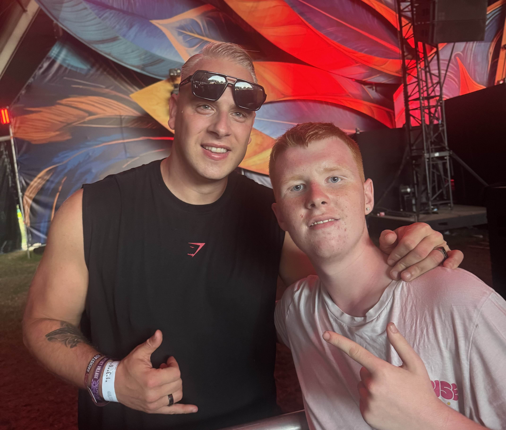
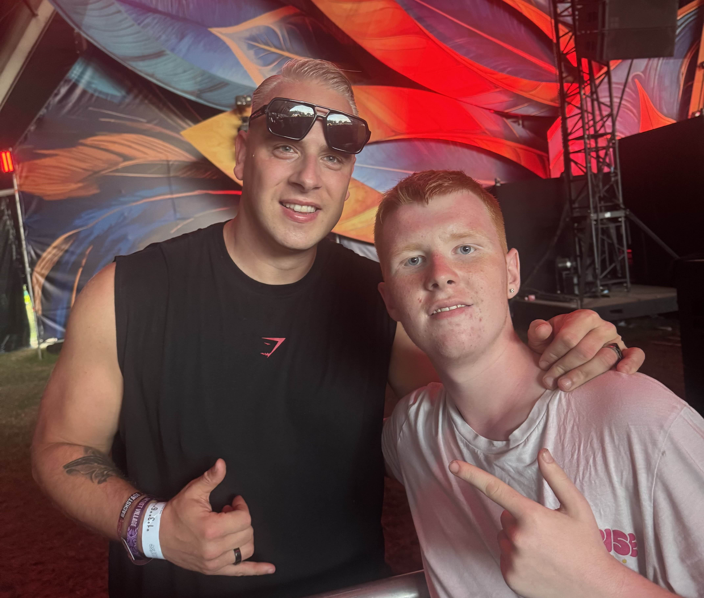

Over mij
Ik woon in het gezellige Herselt en ben iemand die graag actief bezig is. In mijn vrije tijd geniet ik van leuke momenten met vrienden en zoek ik graag de gezelligheid op. Ik hou van feesten, plezier maken en nieuwe mensen leren kennen dat sociale contact geeft me energie en houdt me positief.
Vrienden omschrijven mij als grappig en energierijk. Ik hou van humor en eerlijkheid en probeer altijd een positieve sfeer te brengen, waar ik ook ben. Ik geniet ervan om anderen te laten lachen en samen plezier te maken dat maakt voor mij elk moment waardevoller.
Hobby's
Een van mijn grootste passies is darts. Ik speel in het team Varenpikkers D, een hechte ploeg waarin sportiviteit, teamwork en plezier centraal staan. Darts is voor mij niet alleen een hobby, maar ook een manier om te ontspannen, mezelf te verbeteren en samen met het team mooie momenten te beleven.
Gamen
Naast darts ben ik ook een fervent gamer. Ik geniet ervan om in virtuele werelden te duiken, strategische uitdagingen aan te gaan en samen met vrienden te spelen. Gaming biedt me een leuke afwisseling en stimuleert mijn creativiteit en probleemoplossend vermogen.
Festivals
Festivals zijn voor mij een van de mooiste manieren om te genieten van muziek, mensen en sfeer. Door de jaren heen ben ik naar verschillende festivals geweest, waaronder Tomorrowland, Supremezy en Sunrise Festival.
Elk festival heeft zijn eigen unieke vibe van de magische wereld van Tomorrowland tot de harde beats van Supremezy en de zomerse energie van Sunrise.
Het zijn momenten vol muziek, plezier en nieuwe herinneringen. Festivals geven me positieve energie en het gevoel van vrijheid waar ik elke keer weer naar uitkijk.
Reizen
Ik hou van reizen en het ontdekken van nieuwe plekken. Zo ben ik al in Londen, Griekenland en Nederland geweest, waar ik telkens genoten heb van de sfeer, cultuur en gezelligheid.
Daarnaast ben ik ook naar Spanje geweest om deel te nemen aan het WDF-toernooi in Calella. Het was een geweldige ervaring waarbij ik mijn passie voor darten kon combineren met mijn liefde voor reizen.
én natuurlijk heb ik daar ook goed gefeest. Die combinatie van sport, plezier en nieuwe mensen leren kennen maakt reizen voor mij echt bijzonder.
Slot
Voor mij draait het leven om plezier, verbondenheid en het creëren van mooie herinneringen met de mensen om me heen. Of ik nu darts speel, een game win, dans op een festival of nieuwe plekken ontdek, ik geniet het meest wanneer ik samen met anderen iets beleef. Die combinatie van energie, vriendschap en avontuur maakt elk moment voor mij bijzonder en waardevol.
 
